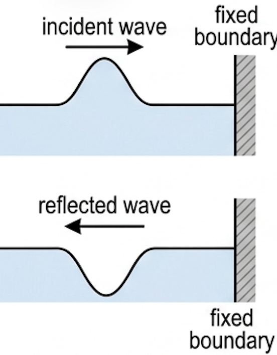
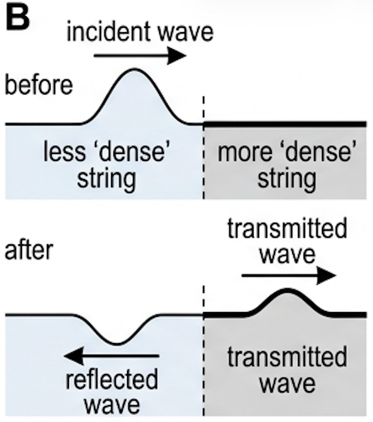
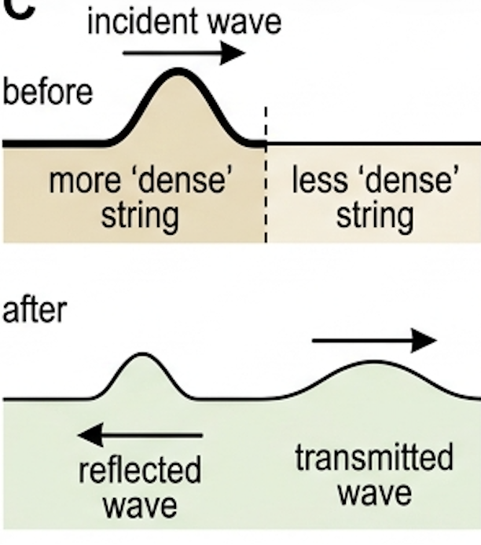
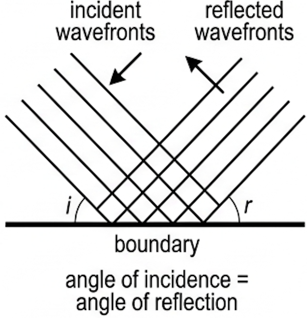
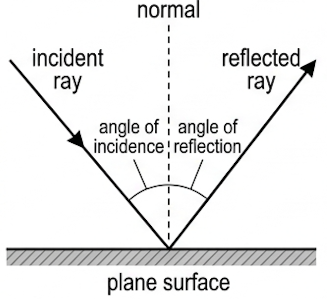
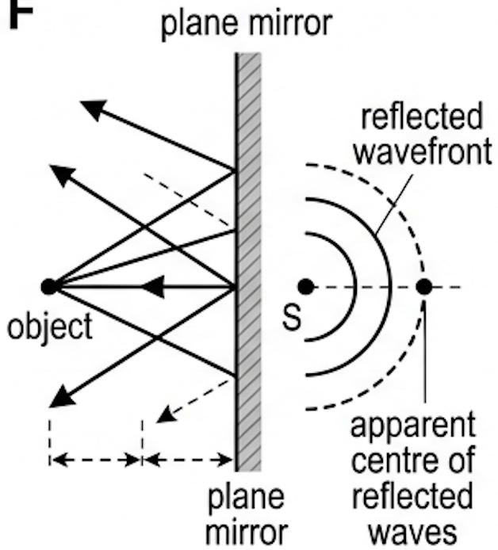
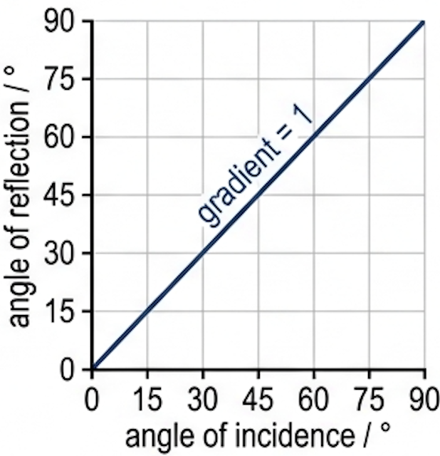
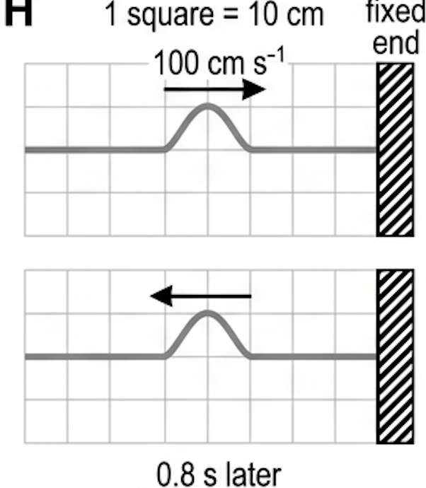

🎯 Hook – the pulse that comes back upside down
Flick one end of a rope whose far end is tied to a wall. The hump you sent races away, hits the knot, and comes back — but inverted. Nothing was lost at the wall; the energy was simply re-directed back into the medium it came from. That is reflection.

📐 Reflection at a boundary — the definition
When a wave meets a boundary between different media, some, or all, of the wave energy will be re-directed back into the first medium. This is called reflection.
A wave travelling towards a boundary is called an incident wave. At the fixed boundary of Fig 1 the reflected wave is inverted: there is a phase change on reflection.
An inversion corresponds to a phase change of \(\pi\) (a shift of half a cycle). If the incident waves are continuous rather than a single pulse, they may combine with the reflected waves to produce a standing wave — the subject of the next topic, C.4.
🔗 Boundaries where some wave is transmitted
Apart from fixed boundaries, where there is no possibility of transmission, waves may also reflect from a boundary where some transmission occurs. Usually the wave will have different speeds in the two different media.
Case 1 — into a slower ('denser') medium. The 'denser' rope has a greater mass per unit length, so the wave travels more slowly through it. The reflected wave is still inverted. The energy is shared between the reflected wave and the transmitted wave, so both amplitudes are less than that of the incident wave.

Case 2 — into a faster medium. When a wave pulse meets a boundary with a medium in which its speed would increase (more dense → less dense string), there is no phase change: the reflected pulse is upright.

🌊 Reflected wavefronts, and the law of reflection
Extending the discussion to two and three dimensions: when parallel wavefronts meet a plane (flat) boundary, some or all of them will be reflected so that the angle the incident wavefront makes with the boundary equals the angle the reflected wavefront makes with the boundary.

When discussing the reflection of light it is more common to refer to rays than wavefronts, as in a ray diagram. A normal is a line perpendicular to the surface at the point of incidence. The angle of incidence and the angle of reflection are measured between the ray and the normal — not the surface.

🪞 Images in a plane mirror
Radial light rays spread out from a point source (an 'object'). When they strike a plane mirror, the law of reflection can be used to determine the directions of the reflected rays. An eye looking into the mirror sees an image located as far behind the mirror as the object is in front.

📈 Graphs every examiner uses
| Graph type | Axes (X, Y) | Shape | What to read |
|---|---|---|---|
| Reflection angles | X: angle of incidence / ° · Y: angle of reflection / ° | Straight line through the origin, gradient exactly 1 (45° line), 0–90° | Gradient = 1 confirms \(\theta_{\text{i}} = \theta_{\text{r}}\); any offset means the angle was measured from the surface, not the normal |
| Pulse snapshot (displacement–distance) | X: distance along string / cm · Y: displacement / cm | Single hump; after reflection the hump is on the opposite side of the axis and travelling the other way | Distance moved \(= v t\); sign of the hump gives the phase change (\(\pi\) or 0) |
| Amplitude sharing at a boundary | X: position / cm · Y: displacement / cm | One large incident hump, then two smaller humps (reflected inverted + transmitted upright) | Both reflected and transmitted amplitudes are smaller than the incident amplitude — energy is shared |


✍️ Worked example – where is the pulse 0.8 s later?
An idealized pulse on a string approaches a fixed end at a speed of 100 cm s⁻¹ (Fig 8, 1 square = 10 cm). Sketch the position of the pulse 0.8 s later.
\(t = 0.8\ \text{s}\)
1 square \(= 10\ \text{cm}\)
\(= 100 \times 0.8 = 80\ \text{cm}\)
\(80 \div 10 = 8\) squares of travel along the string.
🎧 Real-world: reverberation in large rooms
Sound reflects well off hard surfaces like walls, whereas soft surfaces — curtains, carpets, cushions, clothes — tend to absorb sound. A sound that reaches our ears may be quite different from the sound emitted by the source because of the many and various reflections it has undergone. This is why singing in the shower sounds very different from singing outdoors, or in a furnished room.
In a large room designed for listening to music, such as an auditorium, sounds travel a long way between reflections. Since it is the reflections that are responsible for most of the absorption of the sound, a particular sound takes longer to fall to a level we cannot hear — an effect called reverberation. The longer reverberation times of bigger rooms mean a listener may still hear reverberation from a previous sound while a new sound arrives, so sounds 'overlap'. Reflections off the walls, floor and ceiling also matter in a recording studio, although some effects can be added or removed electronically after recording.
🚀 HL Extension – phase change and impedance
Whether a reflection inverts depends on which side of the boundary the wave slows down. Going into a slower medium (greater mass per unit length \(\mu\), since \(v = \sqrt{T/\mu}\)) inverts the pulse; going into a faster medium does not.
The same rule governs light: reflection off a medium in which light travels more slowly (higher refractive index, e.g. air → glass) gives a phase change of \(\pi\); glass → air gives none.
Challenge: two strings are joined; the pulse reflects upright. Which string is denser? (Answer: the second string is less dense — the speed increases, so there is no phase change.)
⚠️ Trap corner – common mistakes
| Misconception | Correct view |
|---|---|
| Angles are measured from the mirror surface | Both the angle of incidence and the angle of reflection are measured from the normal, the line perpendicular to the surface at the point of incidence |
| Every reflection inverts the wave | Only reflection at a fixed boundary, or at a boundary into a slower medium, inverts it. Into a faster medium there is no phase change |
| The reflected pulse has the same amplitude as the incident pulse whenever transmission happens | When some energy is transmitted, the energy is shared, so the reflected and transmitted amplitudes are both less than the incident amplitude |
| The image in a plane mirror sits on the mirror surface | It is as far behind the mirror as the object is in front; the reflected waves only appear to come from that point |
| Wavefronts can be drawn with a break at the boundary | Wavefront diagrams must be continuous at boundaries |
Complete the statements:
✓ Reflected pulse drawn inverted, with the same width and height, on the far side of the original position and moving away from the fixed end. [1]
✓ Ray from the feet reflects to the eye; it strikes the mirror halfway between eye level and the feet — this is the bottom edge. [1]
✓ Mirror length is therefore half the man's height, independent of how far he stands from the wall. [1]
✓ Rays drawn with equal angles of incidence and reflection at the mirror, measured from the normal. [1]
✓ Light travels more slowly in glass than in air, so glass is the 'denser' medium — the analogue of a pulse entering a heavier string. [1]
✓ Reflection at a boundary with a slower medium inverts the wave, exactly as for the string; some light is also transmitted, so the reflected amplitude is smaller than the incident amplitude. (If the light were travelling in glass and reflecting off the glass–air boundary, there would be no phase change.) [1]
✓ (b) After reflection the wavefronts are circular (spherical) arcs converging on the focus, centred on the focus, with decreasing radius as they approach it. [1]
✓ (b) Some transmission occurs at this boundary, so the energy of the incident pulse is shared between the reflected and transmitted pulses. [1]
✓ Amplitude increases with energy, so both the reflected and the transmitted amplitudes are smaller than the incident amplitude. [1]
✓ (2) Measurable quantity: reverberation time, the time for a loud short sound (a clap or balloon burst) to fall by 60 dB. Use a sound-level meter or phone app, record the decay, repeat at several positions, and average. Control the source loudness and the room occupancy.
✓ (3) Typical improvements: add soft furnishing to reduce an over-long reverberation time for speech, or remove absorbers / add reflectors if music sounds 'dead'. Justify each by the balance between reflection off hard surfaces and absorption by soft ones.